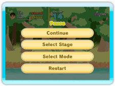
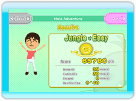
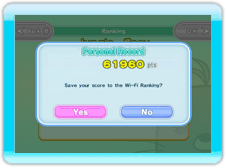
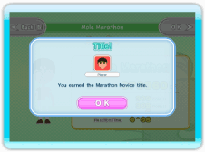
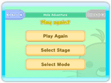

Pause Menu
During a game, press  to display the Pause Menu.
to display the Pause Menu.
| Continue |
Leave the Pause Menu and return to the game. |
| Select Stage |
End the current game and return to the Stage Select screen. (Mole Adventure only)
|
| Select Rules |
End the current game and return to the Rules Select screen. (Party Battle only)
|
| Select Mode |
End the current game and return to the Mode Select screen. |
| Restart |
End the current game and restart from the beginning. |

Results Screen
When the game is over, you'll move on to the Results screen, where you can check your stats and ranking. Press the "OK" button to continue.

Nintendo Wi-Fi Connection Ranking
Whenever you beat your high score, you'll get a chance to save your score to Nintendo Wi-Fi Connection Ranking.
Select "Yes" to use Nintendo Wi-Fi Connection to send off your high-score data.
Select "No" to continue on without sending your high score. You'll have a chance to send it later on via the Ranking mode. (See Page 18 for details.)

Titles
Achieve certain tasks in the game, and you might earn a title. You can see a list of titles you've received in the Player Info screen. (See Page 17 for details.)

Play again?
Finally, use this menu to choose what you want to do next.
| Play Again |
Play another game with the current settings. |
| Select Stage |
Return to the Stage Select screen. (Mole Adventure only)
|
| Select Rules |
Return to the Select Rules screen. (Party Battle only) |
| Select Mode |
Return to the Mode Select screen. |